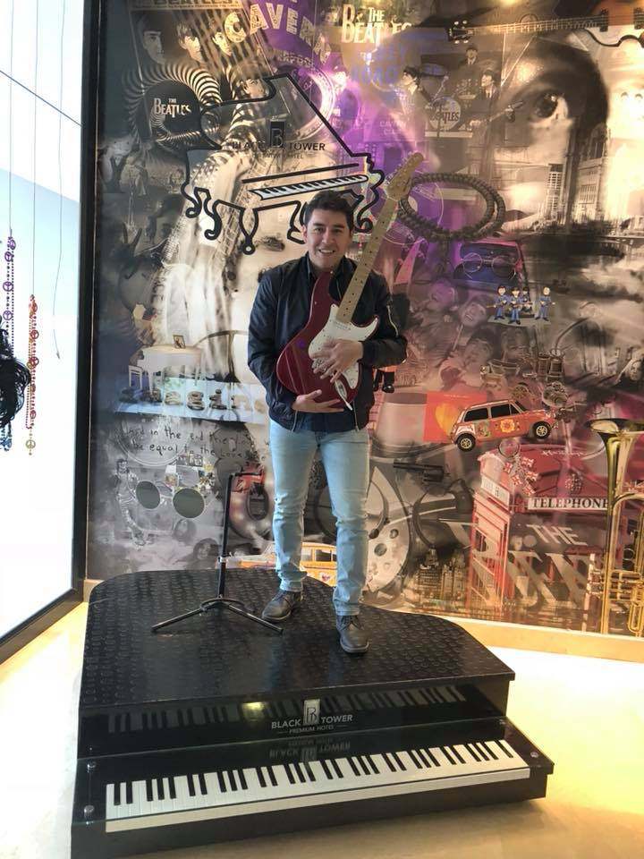

Curriculum Vitae
Nombres:
Holguer Arturo
Apellidos:
Revelo Silva
Fecha de nacimiento:
Enero 22 de 1983
Lugar de nacimiento:
Latacunga - Ecuador
- Inicio
- Educación
- Experiencia
Información Personal

Información de Perfil
Ingeniero Electrónico en la especialidad de Instrumentación. Apasionado por la tecnologia y la música. Fanático del
software libre, emprendedor y Gerente de EducArte Ecuador. Actualmente cursando la certificación en Desarrollo Web en NEXT UNIVERSITY
- Perfil:
- Empresario
- Investigador
- Creativo
- Idiomas: